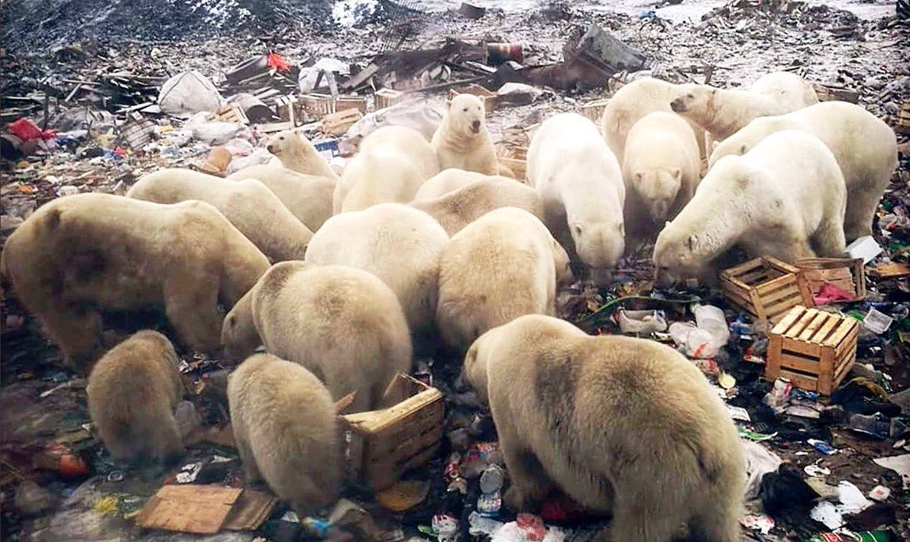

El mundo del oso polar
Descubre la fantástica vida del rey del Ártico
El cambio climático y la lucha por la supervivencia del oso polar
El oso polar es una especie icónica que ha capturado la imaginación del mundo, pero también se ha convertido en un símbolo de la lucha contra el cambio climático. El hábitat del oso polar está siendo amenazado por el cambio climático y la disminución del hielo marino, lo que pone en peligro la supervivencia de la especie.
El hielo marino es fundamental para la supervivencia de los osos polares, ya que es la plataforma que utilizan para cazar y viajar. Sin embargo, el calentamiento global está causando una disminución del hielo marino, lo que dificulta la caza y la reproducción de los osos polares. Además, el cambio climático está afectando a otras especies animales que son importantes para la dieta del oso polar, como las focas.
La disminución del hielo marino también está obligando a los osos polares a viajar distancias más largas para encontrar alimento y agua. Los osos polares son animales nómadas y están acostumbrados a viajar largas distancias en busca de alimento, pero el cambio climático está haciendo que estas travesías sean cada vez más difíciles y peligrosas.
Otro problema importante es la contaminación, que afecta tanto a los osos polares como a su hábitat. Los contaminantes químicos, como los PCB y los pesticidas, se acumulan en el tejido graso de los osos polares y pueden causar daños en su sistema nervioso y reproductivo.
La situación es alarmante y requiere de una acción global para proteger a esta especie icónica y su hábitat. Es necesario tomar medidas para reducir las emisiones de gases de efecto invernadero y limitar el calentamiento global, así como para proteger los hábitats naturales de los osos polares y otras especies animales en peligro.
En resumen, la supervivencia del oso polar está amenazada por el cambio climático y la disminución del hielo marino, así como por la contaminación. Es hora de tomar medidas para proteger a esta especie icónica y garantizar su supervivencia en el futuro.
